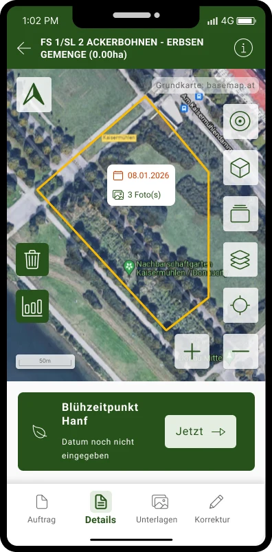

Requirement Distillation
Distil the UI/UX-relevant information directly out of requirement documents and specifications.
I work across UX/UI to lead large-scale projects for public-sector and complex organisations, aligning policy constraints, technical requirements and human needs into accessible and scalable services that work for everyone.
Complete UX redesign of AMA's online gateway for 165,000+ Austrian farming operations — unifying the EU subsidy application (Mehrfachantrag), ÖPUL agri-environment programmes, and livestock management into a single WCAG 2.1 AA compliant portal.
Read Case StudyNative mobile app design for the Austrian Agricultural Market Authority — enabling farmers to photograph and document fields for EU Common Agricultural Policy subsidy applications, with offline-first functionality for rural connectivity.
Read Case Study



Mobile-first redesign of Austria's cattle registration and movement reporting system. Migrating a paper-heavy EU-regulated workflow to an intuitive mobile app for 18,000+ livestock farmers — with offline capability and real-time VIS sync.
Read Case StudyThree years designing a new contact centre intelligence platform from the ground up — automating customer interactions, optimising agent workloads through workforce management, and generating predictive analytics across 4,000+ agents.
Read Case StudyConcrete ways I bring AI into each phase — requirements, concept, design, and documentation.
Distil the UI/UX-relevant information directly out of requirement documents and specifications.
Build experience-based benchmarking — defining the criteria and best-in-class cases across Austrian and EU-wide context.
AI wireframing from requirements and the design system for a true corporate look & feel, plus clickdummies for stakeholder alignment.
Generate synthetic personas from real user questionnaires and run AI usability tests against the Figma designs.
Automatically review designs against the defined design principles and enterprise visual standards.
Bring realistic test data into the design, covering minimal-to-maximal data volumes — a single farmer versus a large retailer.
Define and build Figma templates with AI and import the use-case hierarchy for a structured, consistent file.
Check the built UI and Storybook components against Figma, so obvious findings are fixed before the design review.
Generate edge cases, exhaustive states and errors from realistic data — and surface worst cases like a 36-column table fast.
Two fresh-eyes variants plus one built from existing components, with instant visualisation of stakeholder feedback to confirm direction.
Check mockups against the design system, generate animations, and run bulk changes across Figma components.
Generate structured design documentation and keep Confluence clean across the project lifecycle.
Recorded across each of the government projects and services included in the redesign.
Moderated usability testing before and after the redesign, across 200+ participants.
Every product meets or exceeds WCAG 2.1 AA, verified by an independent accessibility auditor.
Average time-on-task reduced 68% across key transactional flows, verified by A/B analytics.
Post-launch satisfaction measured through survey questionnaires completed by farmers.
From reduced paper, lower support volume and higher task completion, across fifteen projects.
“The redesign of the MFA submission workflow had an immediate impact on our operations. Completion rates rose significantly and far fewer incomplete applications needed manual follow-up — freeing the team to focus on the genuinely complex cases.”
“With her clear explanations she won over our business department remarkably quickly, diplomatically dispelling every concern and answering their questions with real competence — so the changes we had planned could then be implemented smoothly, without friction.”
“It looks perfect. I'm thoroughly impressed by both the functionality and the intuitiveness of what was delivered — it works exactly as it should, and there is nothing at all standing in the way of going live. From my side, this is an unequivocal, wholehearted go-ahead.”
For over sixteen years I have led UX strategy and design at the intersection of public-sector policy, enterprise technology, and human-centred service delivery. My work spans federal ministries, agricultural authorities, transport operators, and entertainment — organisations where design decisions affect thousands of people and must withstand legal and accessibility scrutiny.
Start a ConversationScalable Products · UX Strategy · UI Design
Embedded within Agrarmarkt Austria's product team, owning product and interaction design for the eAMA farmer portal and its companion mobile apps. Drive delivery end-to-end — research, service blueprinting, and design systems, working in close collaboration with front-end teams — for services used by 165,000+ farming operations.
Delivered UX/UI design and front-end prototypes across the agency's enterprise and public-sector client portfolio, working closely with developers to take projects from research and wireframes through to accessible, production-ready interfaces. Helped establish the agency's first shared component library and design documentation.
Managed the development of guest-facing web and on-mountain products for one of the Alps' largest ski resort networks, coordinating marketing, operations, and external technology partners from concept through to season launch — an early grounding in structured product thinking that led directly into UX.
I'm available for strategic consultations, embedded design leadership, accessibility reviews, and end-to-end project engagements. Response within 24 hours.
Thank you for reaching out. I'll be in touch within 24 hours.